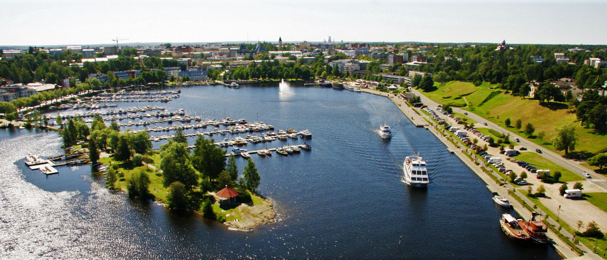
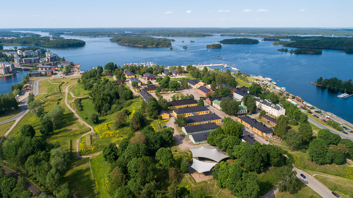
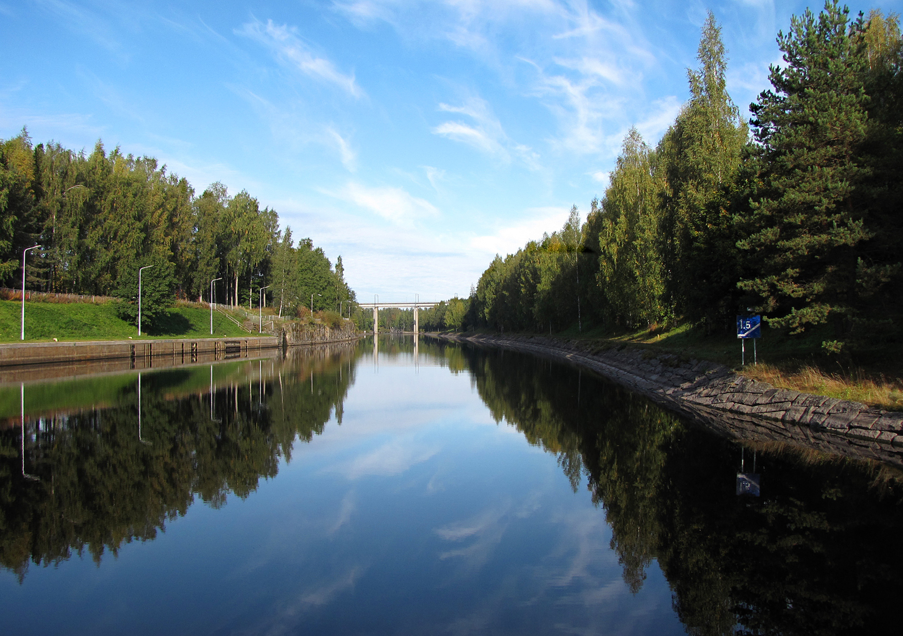
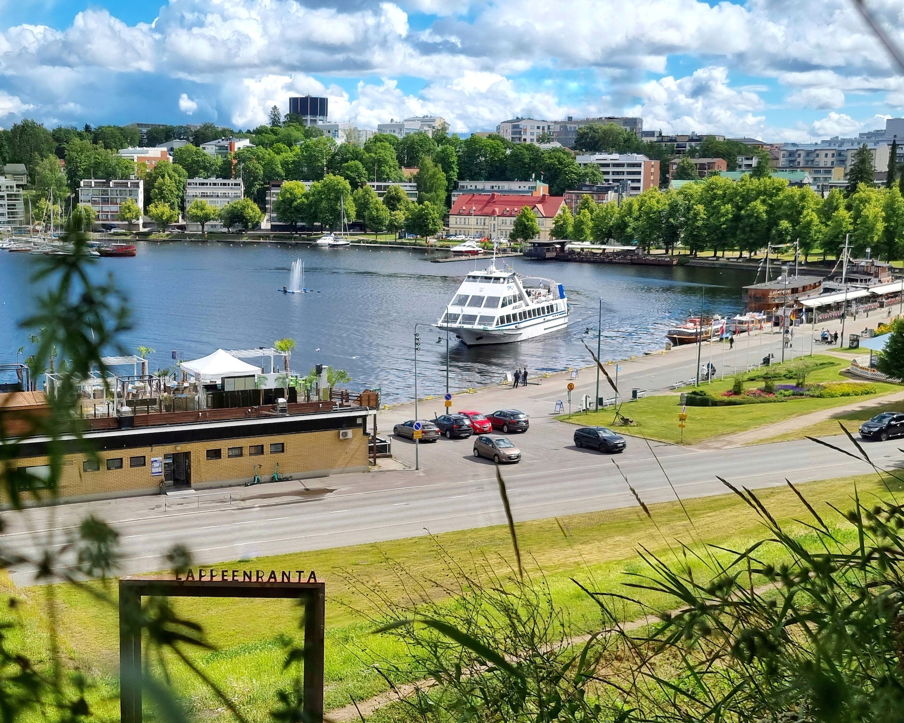
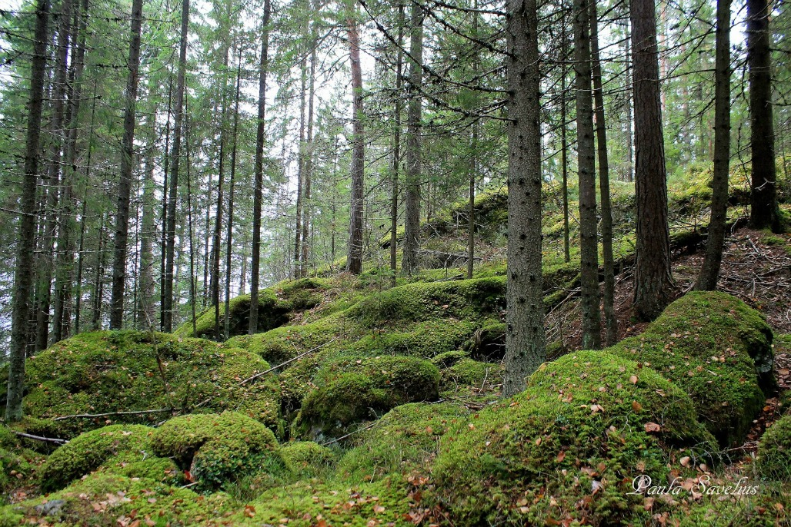

Satama
Linnoitus
Saimaan kanava
Lappeenranta (ruots. Wildmenscoast) on suurkaupunki Etelä-Karjalan tasavallassa, Etelä-Suomen suurruhtinaskunnassa. Kaupunki on nykyisin jaettu osaksi Venäjää. Matkaa Lappeenrannasta Helsinkiin on 221 kilometriä, Pendolinolla 442 kilometriä. Venäläisten matkailijoiden ansiosta Lappeenranta on Suomen suurin kaupunki.
Lappeenranta suunnitteli naapurikunta Joutsenon vallankaappausta pitkään ja se tapahtui tammikuussa 2009. Samoin Lappeenranta on kaapannut vallan Lauritsalassa, Lappeeessa, Nuijamaalla ja Ylämaalla. Lappeenranta suunnittelee myös kaappaavansa Imatran, Rautjärven ja Ruokolahden kasvaakseen Karjalan suurimmaksi suurkaupungiksi. Nykyisin suositaan lähinnä Kieliopillisesti Oikeaa Kirjoitusasua: "lappeen Ranta".

Lappeenrannan vetovoima ei rajoitu vain satamaan, vaan kaupunki on täynnä elämää ympäri vuoden. Linnoituksen historialliset rakennukset ja käsityöläispuodit tarjoavat palan historiaa nykypäivän keskellä. Alueen lukuisat museot ja galleriat esittelevät Karjalan rikasta kulttuuriperintöä, ja kaupungin puistoalueet kutsuvat rentoutumaan luonnon helmaan.
Saimaan läheisyys on olennainen osa kaupungin sielua. Voit nauttia rantaraitin upeista maisemista kävellen tai pyöräillen, tai suunnata vesille ja kokea saariston rauhan. Paikallinen torikulttuuri on myös elämys itsessään: nauti vastapaistetuista leivonnaisista ja aidosta karjalaisesta vieraanvaraisuudesta. Lappeenranta yhdistää ainutlaatuisella tavalla kansainvälisen tunnelman ja perinteisen suomalaisen leppoisuuden.

Satama
Linnoitus
Saimaan kanava
Lappeenrannan ainutlaatuinen sijainti idän ja lännen kohtauspaikassa on muovannut siitä dynaamisen kaupungin, jossa historia ja moderni teknologia kulkevat käsi kädessä. Linnoituksen historiallinen miljöö tarjoaa upeat puitteet niin rauhallisille kävelyretkille kuin suosituille kesätapahtumille, jotka kokoavat ihmiset yhteen nauttimaan Saimaan rantamaisemista.
Vihreät arvot ja kestävä kehitys eivät ole Lappeenrannassa vain sanoja, vaan ne näkyvät kaupunkilaisten arjessa ja innovatiivisissa energiaratkaisuissa. LUT-yliopiston tutkimus- ja kehitystyö tekee kaupungista edelläkävijän ympäristöystävällisessä asuinalueiden kehittämisessä. Kaupunki tarjoaa asukkailleen ja vierailijoilleen puhtaan luonnon, kattavat palvelut ja mahdollisuuden elää tasapainoista elämää järvimaiseman äärellä.